What Is Solidarity Tech?
Solidarity Tech is a centralized organizing platform designed to help volunteers like you coordinate campaigns, manage events, and track organizing efforts. Whether you're working at the dashboard, on mobile, or sharing sign-up pages with supporters, Solidarity Tech is your command center for volunteer engagement.
Three Ways to Use Solidarity Tech
Your main command center is at dashboard.solidarity.tech. This is where you'll do most of your organizing work, from creating events to managing volunteers.
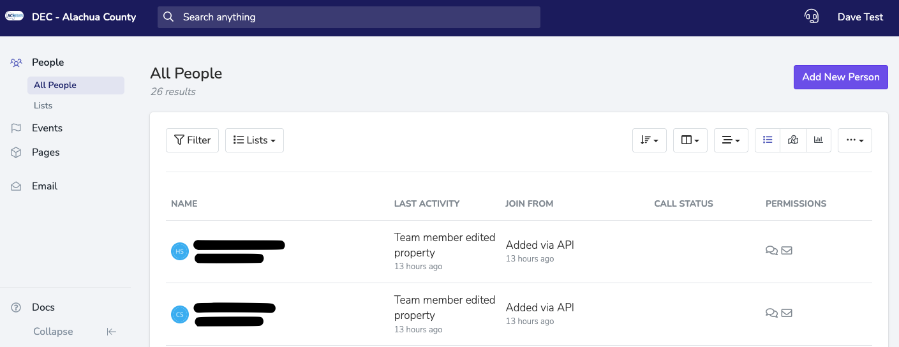
Organize on the go! Download the mobile app at solidarity.tech/app available on both iOS and Android.
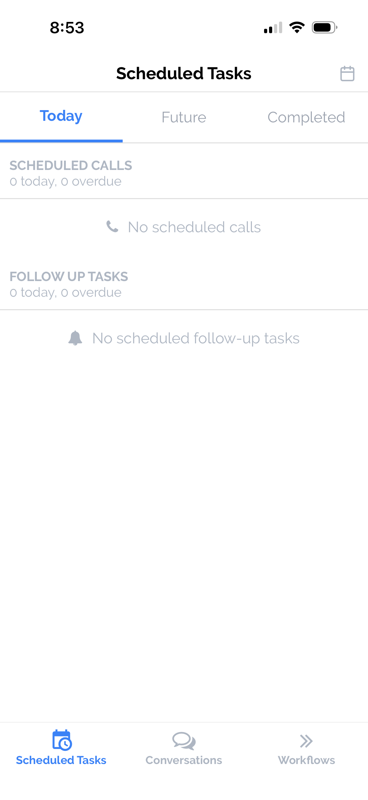
These are the web pages supporters see when they're signing up to volunteer. You create these through Solidarity Tech and share them on social media, flyers, or emails to recruit volunteers.
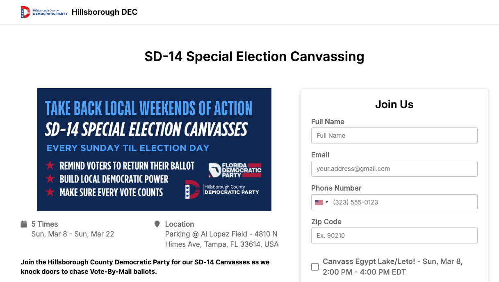
What You'll Do with Solidarity Tech
- Create and manage events
- Recruit and track volunteers
- Coordinate volunteer recruitment efforts (email, phone banking, texting*)
*Email, phone banking, and texting features will be available at a later date.
What Solidarity Tech Does NOT Do
- No voter data - this is volunteer organizing only
- It does not replace VoteBuilder - use Solidarity Tech for volunteers, VoteBuilder for voters
How to Log In
Getting access to Solidarity Tech is a three-step process: receive an invitation, create your account, and log in. Let's walk through each step.
Step 1: Receive Your Invitation
To get started with Solidarity Tech, your DEC chair or the FDP Data Team will add you to the system. You'll receive an invitation via text or email with a link to set up your account.
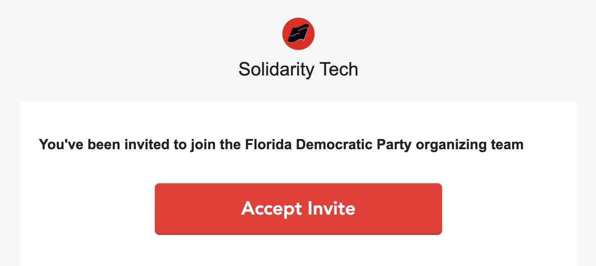
Step 2: Create Your Account
Click the invitation link, and you'll be taken to a page where you can set up your account. Enter your email, create a password, and click Submit.
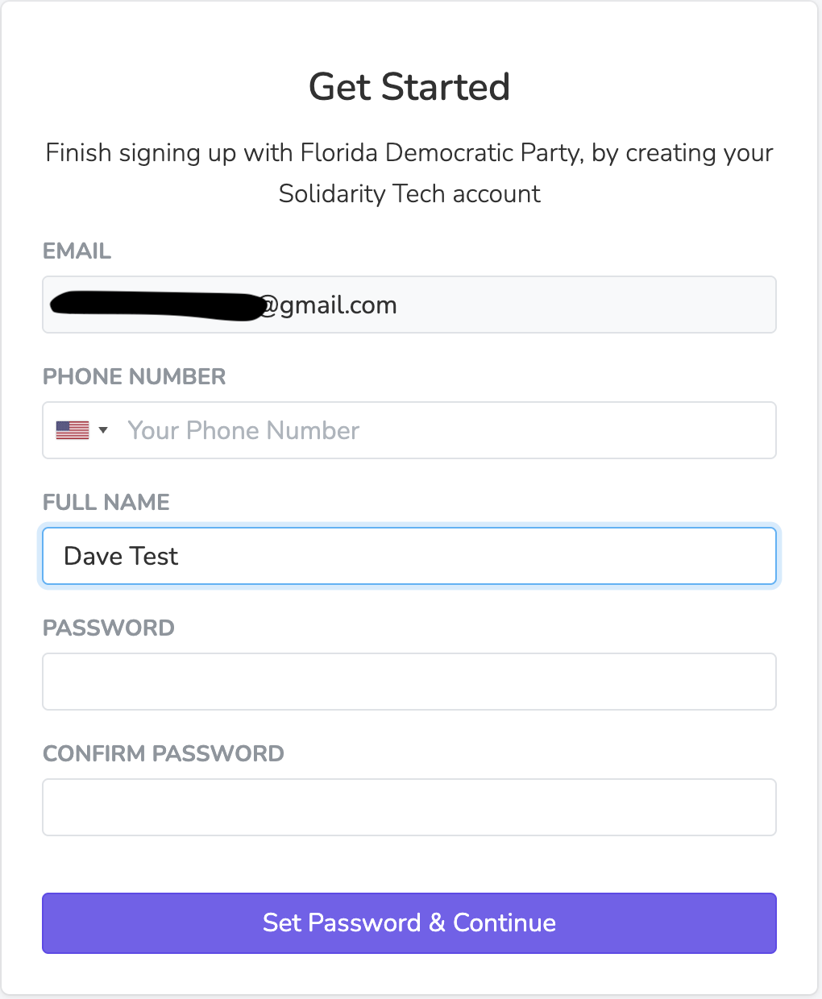
Step 3: Log In
Now you're ready to log in!
- On Computer: Go to dashboard.solidarity.tech
- On Phone: Download the app from solidarity.tech/app (iOS App Store or Google Play)
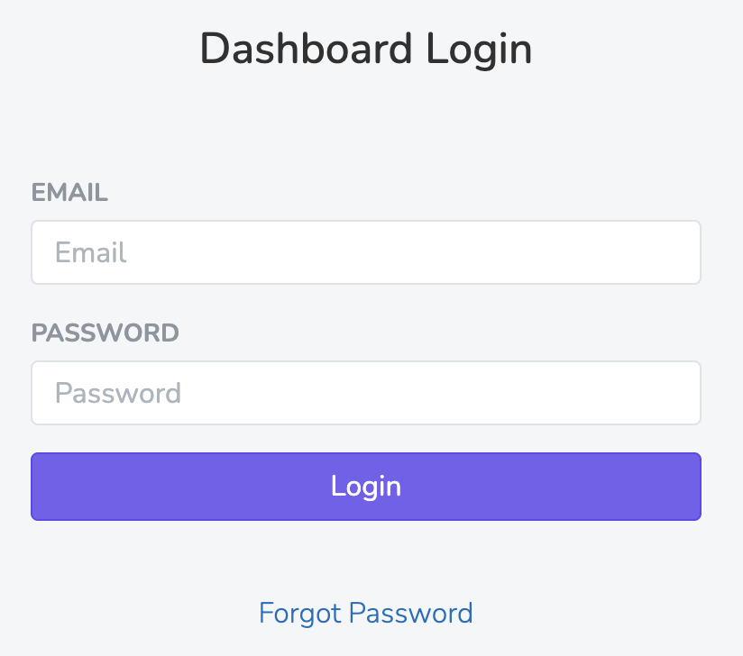
Forgot Your Password?
If you forget your password, follow these steps:
- Go to the login page
- Click "Forgot Password"
- Enter your email address
- Check your email for a password reset link
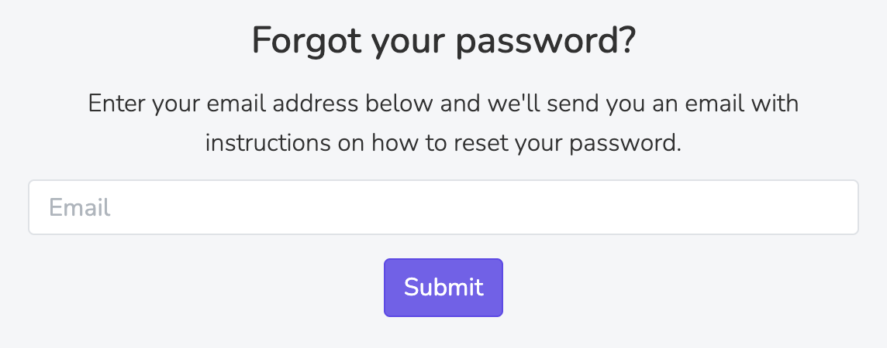
Understanding Your Dashboard
Once you've logged in, you'll see the Solidarity Tech dashboard. It's organized to give you quick access to all the tools you need for organizing.
The Left Sidebar
The left sidebar contains the main navigation menu. Here's what you'll find:
- People - View and manage your volunteer contacts (Admin only)
- Events - Create and manage events
- Pages - Create sign-up pages and forms
- Email - Send emails to volunteers
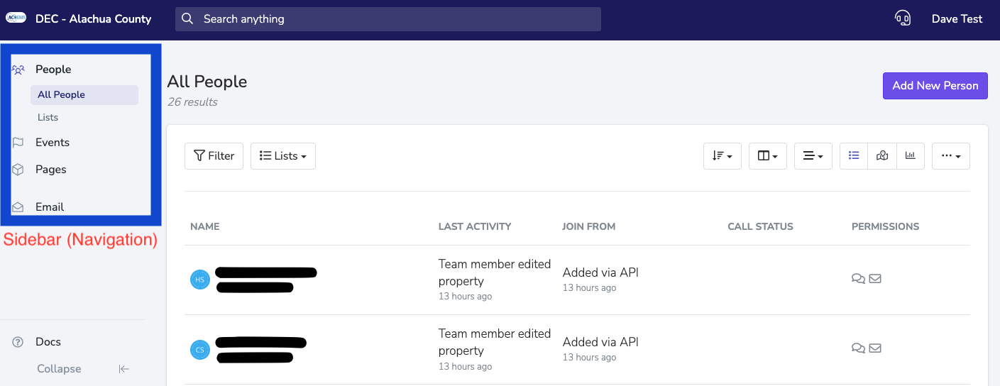
Your Scope
In the top left corner of your dashboard, you'll see "Your Scope." This controls which contacts and events you can see. If you work with multiple organizations, you can switch between them here.
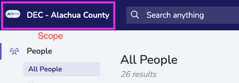
Your Role & What You Can Do
Your access to Solidarity Tech depends on your role. There are three main roles in Solidarity Tech, each with different permissions.
Role Overview
| Role | Description | Best For |
|---|---|---|
| Admin | Full access to all features | DEC chairs and organizing leads |
| Organizer | Can create and manage events, pages, and draft emails | Event coordinators and recruiters |
| User | Can participate in workflows (check in, view contacts) | Volunteer coordinators at events |
Detailed Permissions by Role
| Action | Admin | Organizer | User |
|---|---|---|---|
| View contacts | ✓ | ||
| Edit contacts | ✓ | ||
| Create events | ✓ | ✓ | |
| Take attendance/check in | ✓ | ✓ | ✓ |
| Create pages | ✓ | ✓ | |
| Draft emails | ✓ | ✓ | |
| Send emails | ✓ |
Events: The Complete Walkthrough
Key Point: The main difference between Solidarity Tech and Mobilize for event creation is that event sessions and event pages are different things rather than one page. An event is your internal management tool (sessions, RSVPs, etc.), while the event page is what you share with supporters to recruit them.
Part A: Create the Event
Click "Events" in the left sidebar, then click "Create New Event" button in the top right.
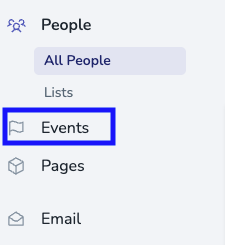
You'll see the Create New Event form.
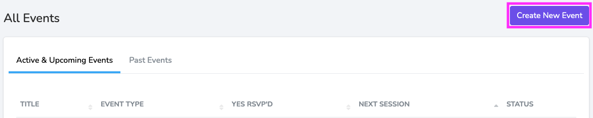
Give your event a clear, descriptive name. Here are some examples:
| Good Names | Names to Avoid |
|---|---|
| School Board Town Hall - March 15 | Event1, Meeting, Important Thing |
| Phone Banking: City Council Campaign | stuff, test |
| Canvassing - Downtown District | ASAP, Urgent |
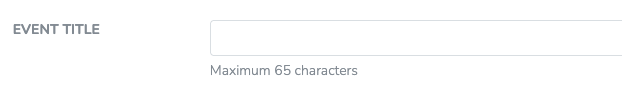
Choose between two event types:
- In-Person: Physical location with address
- Virtual: Online event with meeting link or Zoom account
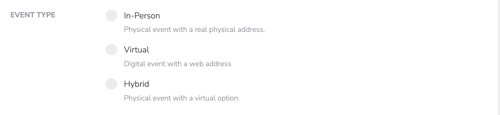
Depending on your event type:
- In-Person: Enter the full address. Solidarity Tech will auto-complete the address as you type.
- Virtual: Select Zoom account (if available) or paste a meeting link
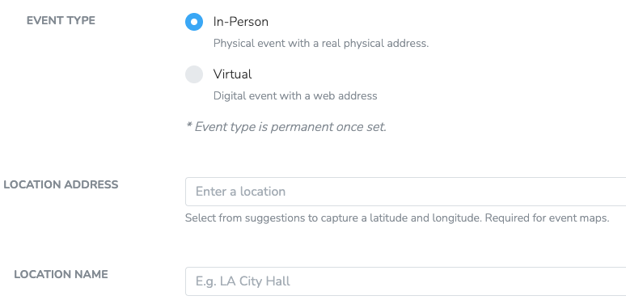
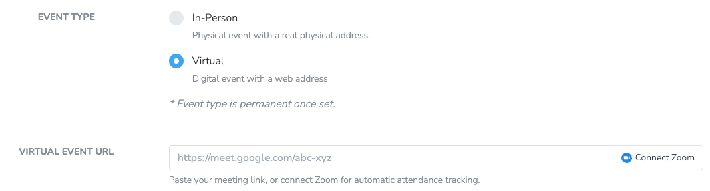
Select the date and start/end times for your event.
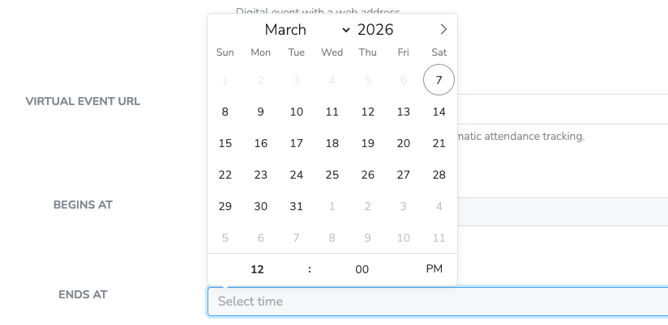
Click "Create" or "Save" to complete the event creation. Your event is now in the system!
Part B: Full Event Creation Walkthrough
Watch this video walkthrough of the entire event creation process from start to finish:
Part C: Adding Sessions
Events can have one or more sessions. Each session has its own start time, end time, location, and title. This is useful for recurring events or events with multiple time slots.
Follow these steps to add a session to your event:
- Open your event
- Click on the "Schedule" tab
- Click "Add Session"
- Set the session start and end times
- Set the session location (can be different from event location)
- Set the session title (optional)
- Click "Create"
- Your session is added to the event
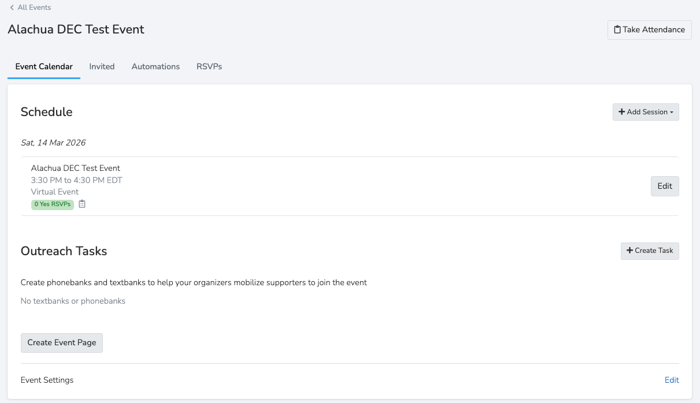
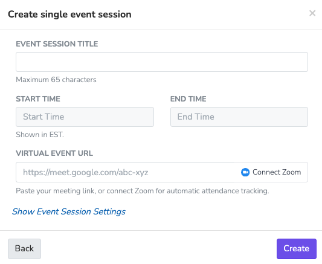
For events that happen on a regular schedule (weekly meetings, daily shifts), you can set them to repeat automatically:
- Create your first event session as normal
- Click "Add Session" again
- Instead of adding a single session, look for "Make Recurring"
- Choose the recurrence pattern: Daily, Weekly, or Monthly
- Set when the recurring sessions should end
- Click "Create"
- Solidarity Tech will automatically create all the sessions
Part D: Adding Event Sessions Walkthrough
Watch this video walkthrough of adding sessions to an event:
Part E: Event Settings
Before creating the event page and sharing your event, review the settings to make sure everything is configured correctly. At the bottom right of the page select Edit to view the event settings.
- Languages: Set what languages information about this event will be available in
- Event/Campaign Tags: Tag your event for organizing and filtering (e.g., "Private" to hide from main calendar)
- Enable RSVP Confirmation: Adds a "Confirm" button that appears before the event for a more accurate headcount
- Enable Host Tools: Generate a public link for event hosts to view RSVPs, mark attendance, and contact attendees without logging in
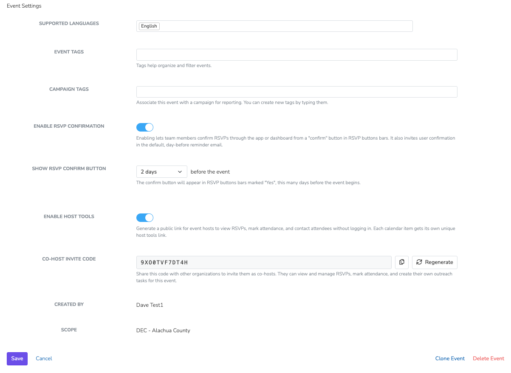
Once you've created sessions, you can edit them by clicking the Edit button on each session. Here are the key settings:
- Host Tools: Gives volunteer hosts access to check people in without a full dashboard account
- Self Check-In Link: A link or QR code that volunteers can use to check themselves in
- Delete: You can delete event sessions
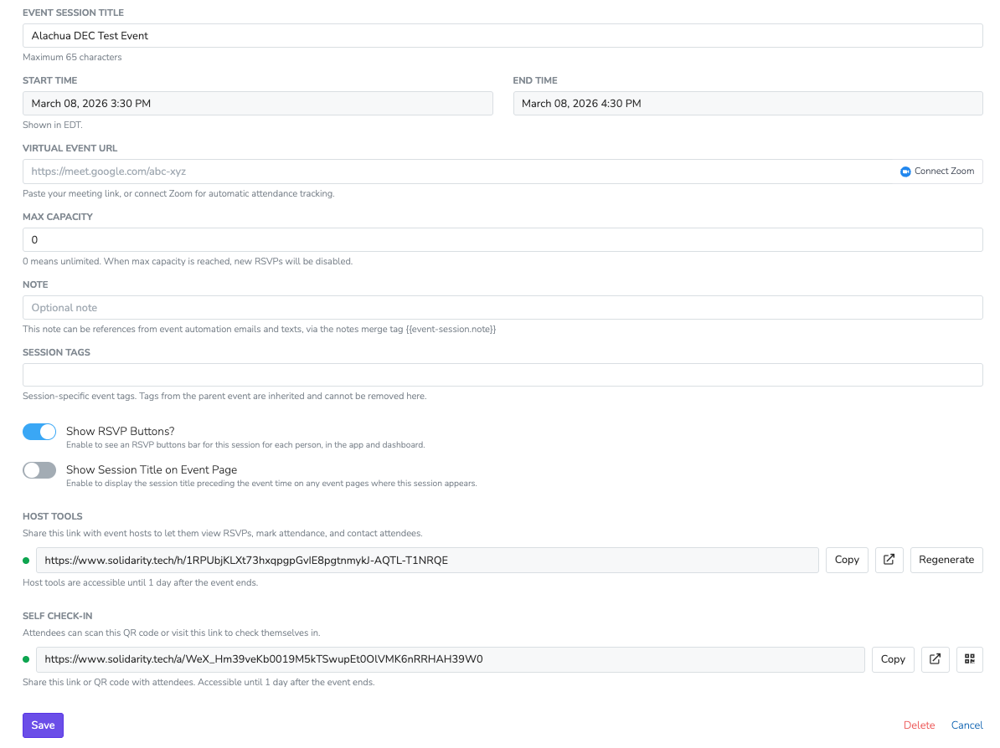
For events that occur on a regular schedule, Solidarity Tech can automatically create multiple sessions. This is useful for:
- Weekly team meetings
- Daily phone banking shifts
- Monthly town halls
Here's how recurring session settings work:
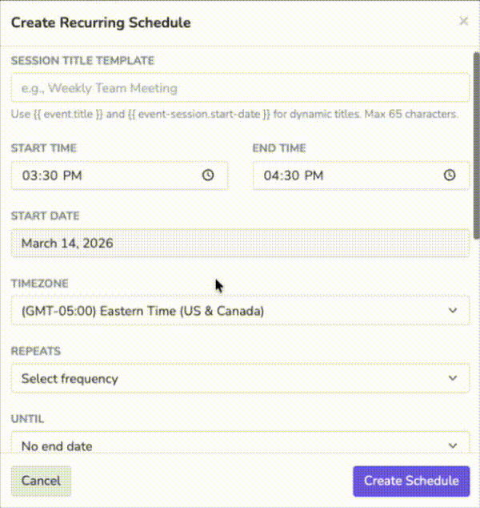
Part F: Other Event Tabs
You can set who is able to be RSVP'd for the event by an organizer. For instance, only allow people who have the Assessment of DEC/CC Member to be RSVP'd if this is an official DEC/CC Meeting where only members can attend.
Events come with built-in automated messages that you can turn on/off:
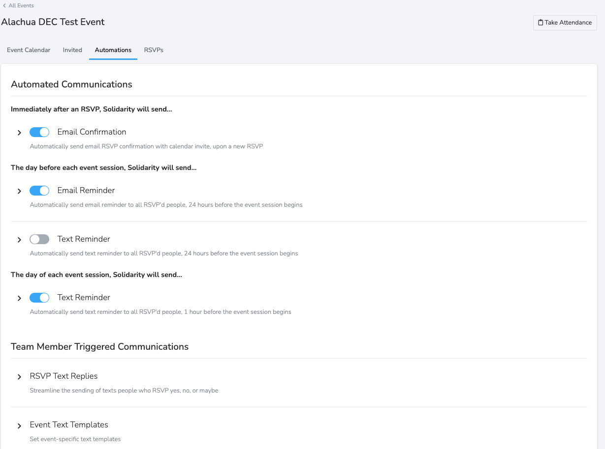
- RSVP Confirmation Emails: Sent when someone signs up
- Reminder Emails/Texts: Sent the day before and/or the day of the event
- Team Member Triggered Communications: Text templates that team members can send to people who have RSVP'd
These automations can be customized per event and translated into multiple languages.
This tab shows the people who have RSVP'd for the event and their current status. You can choose what event session you are looking at with the dropdown in the top right.
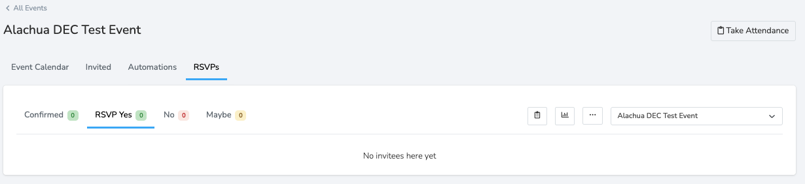
Part G: Create & Share the Event Page
Here's how to create a page where supporters can sign up for your event:
- Open your event
- Click on the "Schedule" tab
- Select "Create Event Page"
- Select your organizations website and select Create Event Page
- Enter a title (usually the same as your event)
- Add a content image
- Write a description explaining why people should attend
- Add any merge tags, images, videos, or additional details
- Click "Publish" to make it live
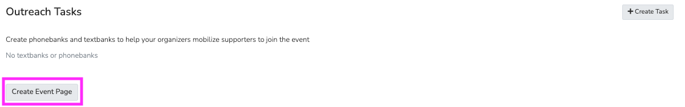
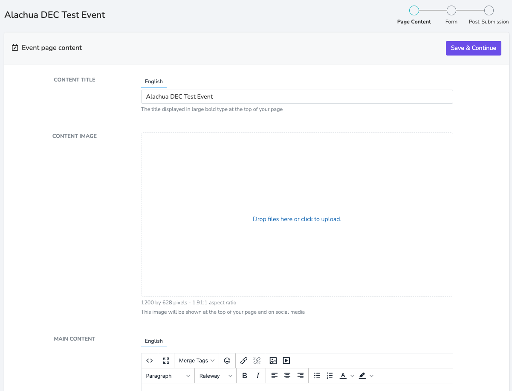
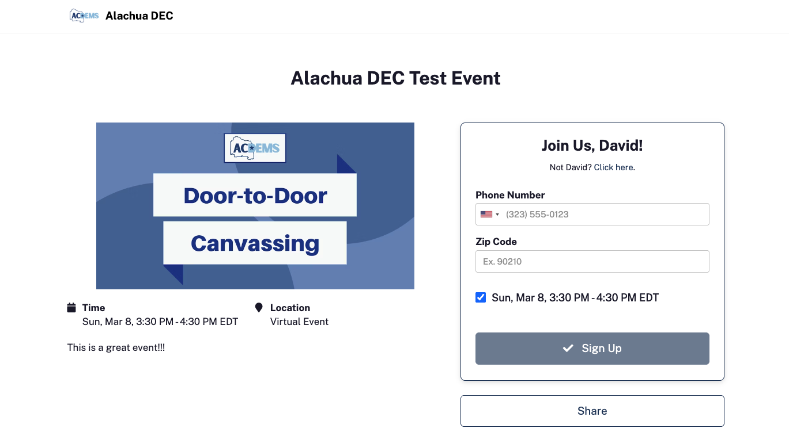
Once your event page is published, share it with the world:
- The event should automatically appear on your Solidarity Tech Org Homepage unless it is tagged Private
- Copy the page link from the page settings
- Post it on social media (Facebook, Twitter, etc.)
- Add it to your event flyers and email campaigns
- Email it to your volunteer list
Customize how your event page appears when shared:
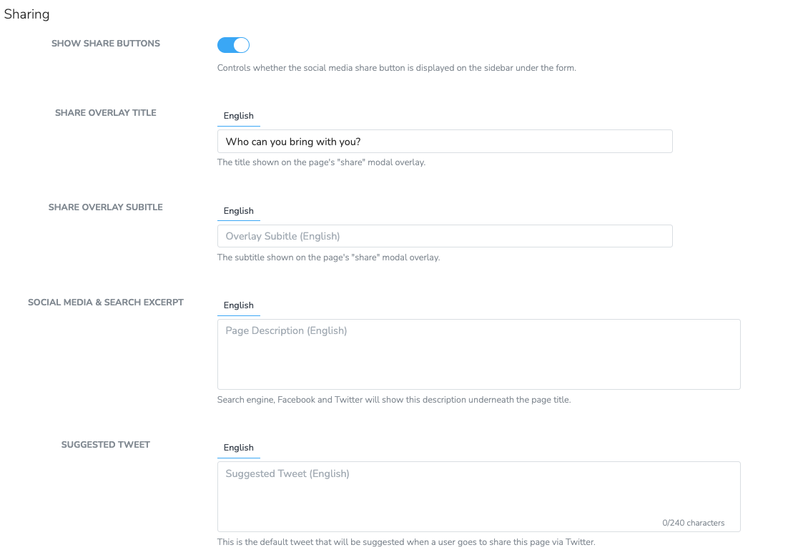
When someone clicks your event page and signs up:
- They appear in your RSVPs tab
- They receive a confirmation email
- They receive reminder emails/texts before the event
- Their contact information is saved in Solidarity Tech
Before you share your event page with the world, make sure you've covered everything:
Part H: Full Event Page Creation Walkthrough
Watch this video walkthrough of creating and sharing an event page:
Events: Managing RSVPs & Attendance
Once your event is live and volunteers are signing up, you need to manage who's coming and take attendance. Here's how to do it.
Checking Who Signed Up
To see all the volunteers who RSVP'd to your event:
- Click "Events" in the sidebar
- Click on your event
- Click the "RSVPs" tab
- You'll see everyone who signed up. You can filter by session if you have multiple time slots with the dropdown in the upper right.
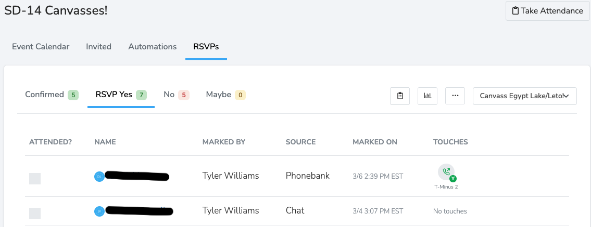
Checking People In
When people arrive at your event, you need to mark them as present. There are two ways to do this:
If you've enabled Host Tools for your event, volunteers can check people in using a simple interface:
- At the event, give volunteers the Host Tools link
- They can search for volunteer names
- Click the name to mark them checked in
- To add walk-ins (people who weren't on the RSVP list), click the + icon and add their info
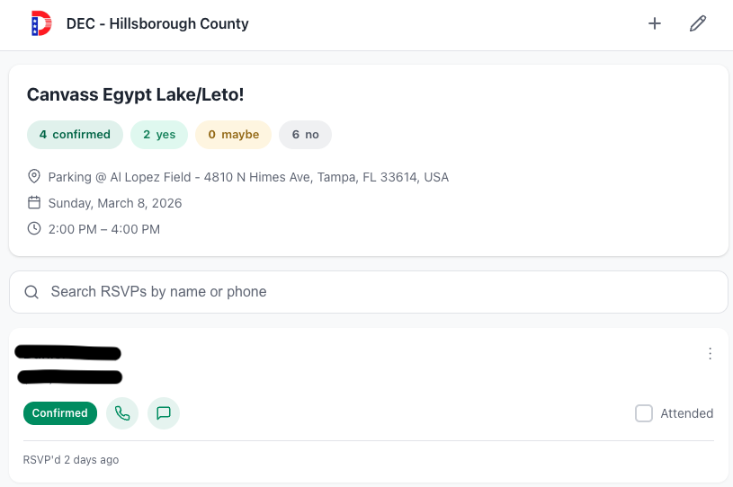
From the dashboard, you can also take attendance directly:
- Open your event
- Click "Take Attendance"
- Search for volunteers by name or phone number
- Click their name to mark them checked in
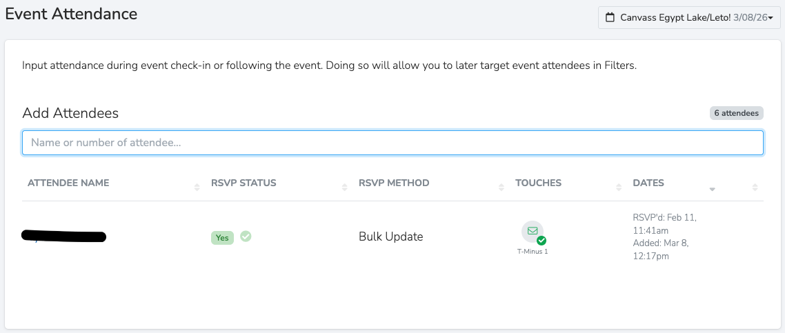
Someone Shows Up Who Isn't in the System?
No problem! During check-in, if someone isn't in the system:
- Search their name or phone number
- If they're not found, click "Add New Contact"
- Enter their information
- Mark them checked in
Self Check-In with QR Code
For a hands-off approach, you can generate a QR code that volunteers can scan to check themselves in:
- Open your event session
- Click the Edit button
- Find the "Self Check-In" section
- Copy the link or download the QR code
- Print the QR code and post it at your event
- Volunteers can scan it from their phone to check in
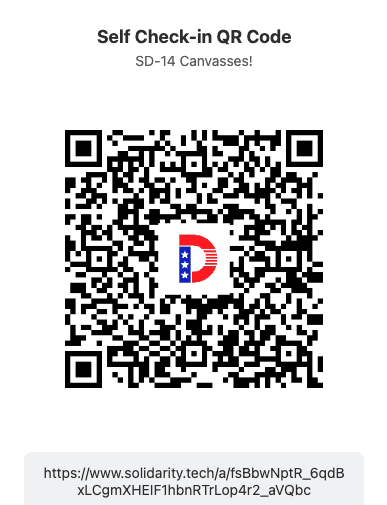
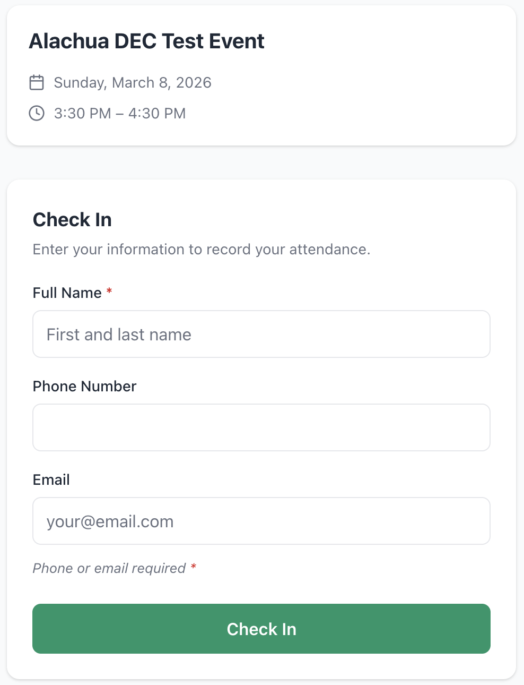
Taking Attendance Walkthrough
Watch this video walkthrough of taking attendance at an event:
Video: Taking Attendance Walkthrough
People: Finding & Viewing Contacts
Solidarity Tech stores all your volunteer information in one place. Let's learn how to find and view volunteers in your contact list.
How to Find Someone
To look up a volunteer:
- Click "People" in the sidebar
- Use the filters on the left to narrow down your list (optional)
- Click on a person's name to open their profile
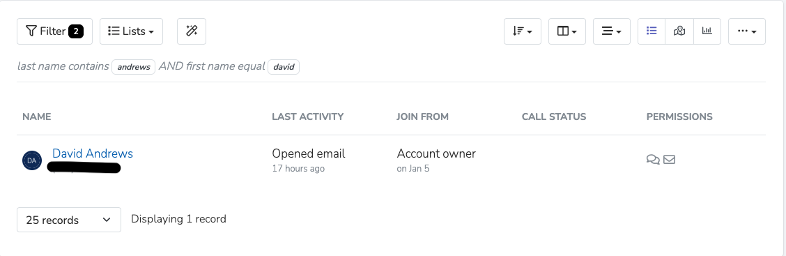
What You See on a Profile
When you click on someone, you'll see their volunteer profile with lots of useful information:
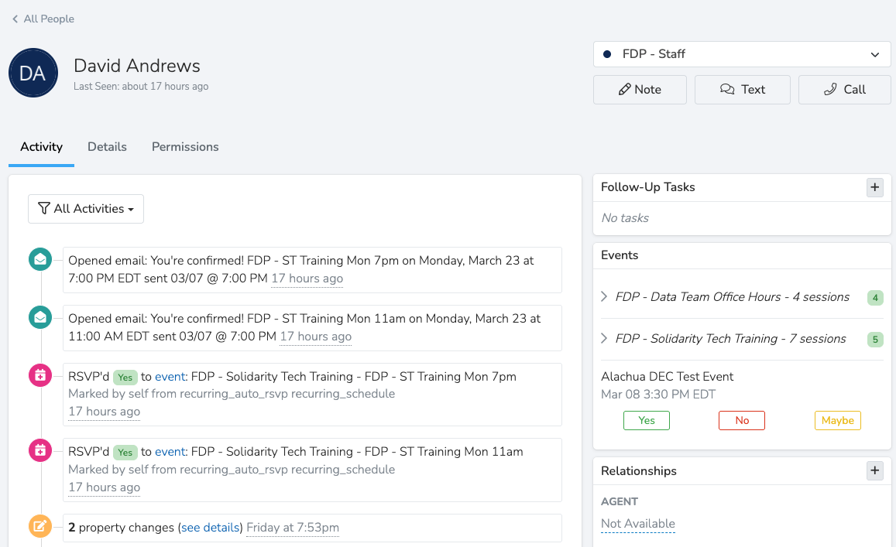
A profile includes:
- Main Details: Name and Assessment
- Activity Stream: Recent actions and communications
- Contact Details: Phone, email, address
- Chapters: Which groups or areas they're involved with
- Language: Preferred language for communications
- User Properties: Custom fields (volunteer type, skills, etc.)
- RSVP History: Events they've signed up for
- Attendance History: Events they've actually attended
- Notes: Internal notes about the volunteer
Viewing Your Contact List
In the People section, you have several ways to view and organize contacts:
- Sort: Sort by name, date added, or last activity
- Columns: Choose which information to display
- Map View: See volunteers plotted on a map
- Chart View: Visualize data about your volunteers
People: Searching & Filtering
With a large volunteer list, you need powerful tools to find exactly who you're looking for. Solidarity Tech's filtering system makes it easy. This same filter is in multiple places in Solidarity Tech but the functionality is the same.
How to Use the Filter
Here's the step-by-step process for filtering your contacts:
- Click "People" in the sidebar
- Click the "Filter" button (usually a funnel icon)
- Click "Add Filter" to start building rules
- Select a property to filter by (Name, Location, Event RSVP'd to, etc.)
- Choose an operator: "is", "is not", "includes", "excludes", etc.
- Enter the value you're looking for
- To add more rules, click "Add Filter" again
- Choose whether rules should use AND or OR logic
- Click "Apply" to see results
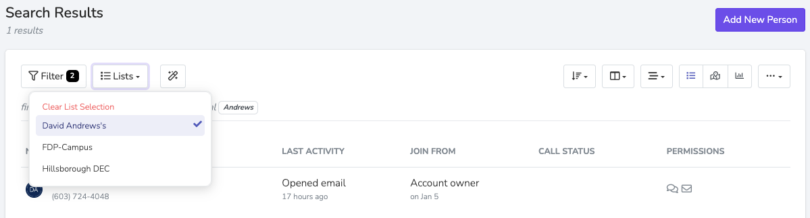
Useful Filters
Here are some common filters to help you find volunteers:
| What You Want | How to Filter |
|---|---|
| New sign-ups from last week | Created At is within last 7 days |
| People who RSVP'd to a specific event | RSVP'd Events includes [Event Name] |
| People who actually attended an event | Attended Events includes [Event Name] |
| Volunteers in a certain area | Location is [Zip Code/City] or Legislative Districts is [Congressional, Senate, House] |
| Volunteers for specific events or projects | Custom User Property: FDP - Volunteer Type includes includes [Type] |
Saving a Filter as a List
Once you've created a filter you like, you can save it to use again and share with your team:
- Create your filter (as described above)
- Click "Save as List"
- Give your list a name (e.g., "New Volunteers This Week")
- Your team can now use this saved filter

Video: Creating and Saving Filters
People: Adding a New Contact
You can add new volunteers to your system in multiple ways. Here's how to do it from the dashboard.
Adding Someone from the Dashboard
To manually add a new contact:
- Click "People" in the sidebar
- Click "Add Person" button
- Enter their First Name, Last Name, Phone, Email, and Zip
- Add any other information you have (address, volunteer type, etc.) using the add additional field dropdown
- Choose if you want to send them a welcome message
- Click "Save"
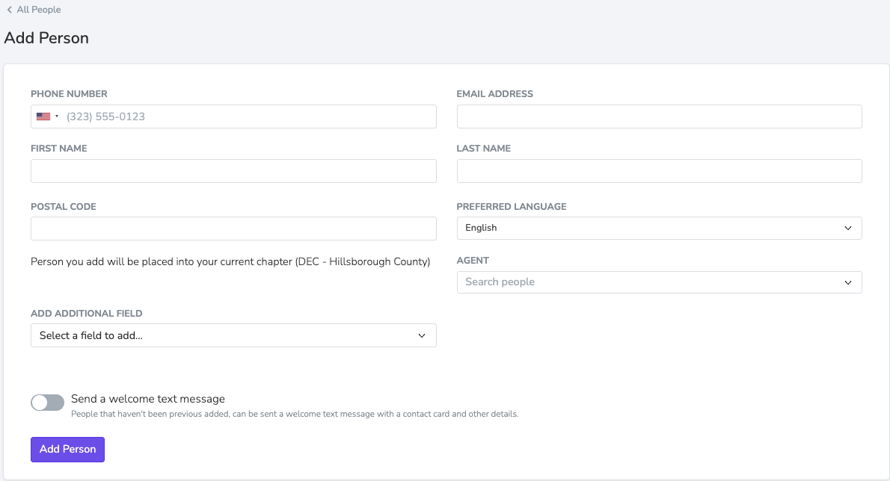
Adding a Welcome Text (Optional)
When adding someone new, you have the option to send them an automatic welcome text from the Solidarity Tech phone number:
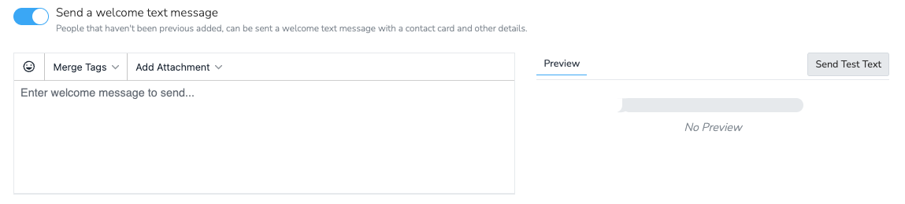
Adding someone new at an Event
An easy way to add someone new is during event check-in:
- At the event, either open host tools or open the attendance screen
- With Host Tools: Click the + icon and add their info
- With the attendance screen: Search for the person's name or phone number
- If they're not found, click "Create New Contact"
- Enter their information
- They're automatically marked as checked in
- They're now in your volunteer database
Pages: Creating Forms & Sign-Up Pages
Beyond event pages, Solidarity Tech lets you create other types of pages to collect information from supporters and volunteers.
Types of Pages
Here are the different page types you can create:
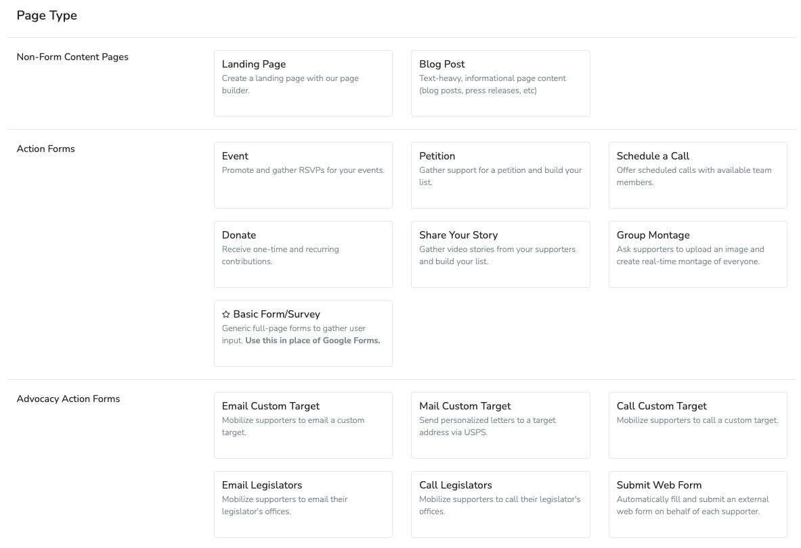
| Page Type | What It Does | Use For |
|---|---|---|
| Event Page | Promotion and signup for an event | Recruiting attendees |
| Basic Form | Collect custom information | Surveys, applications, feedback |
| Petition | Collect signatures/support | Building support for causes |
| Landing Page | Informational page with CTA | Education, fundraising |
| Blog Post | Long-form content | Sharing stories, education |
Organization Volunteer Form
Solidarity Tech includes a default volunteer sign-up form that works with smart automations:
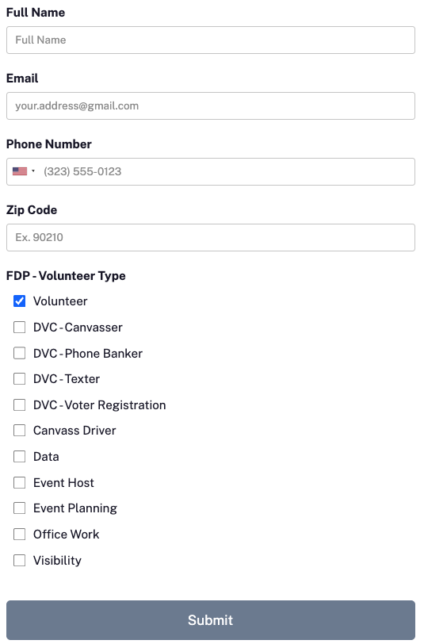
When someone fills out the volunteer form, here's what automatically happens:
- They receive a welcome email immediately
- Their Assessment is set to "Potential Volunteer"
- After 24 hours with no RSVP or event attendance, they get an email + text
- After 5 days with still no activity, they get another email
- Follow-up messages encourage them to get involved
Troubleshooting & Common Questions
Got a problem? Here are answers to the most common questions volunteers ask about Solidarity Tech.
Login Problems
Solution: Contact your DEC chair. They need to add you to the Solidarity Tech system. Once they do, you'll receive an invitation via text or email. Check your spam folder if you don't see it right away.
Solution: Make sure you completed the account setup process by clicking the link and submitting your email and password. Simply being in the contacts database is not enough. If you've already done that and still can't log in, try the password reset process on the login page.
Solution: Go to the login page and click "Forgot Password." Enter your email address and follow the reset link sent to your email. Make sure to check your spam folder.
Quick Reference: Login Troubleshooting
| Problem | Solution |
|---|---|
| No invitation received | Contact your DEC chair to be added to the system |
| Can't log in after invitation | Make sure you completed account setup; try password reset |
| Invitation link expired | Ask your DEC chair to resend the invitation |
| Getting error messages when logging in | Contact FDP Data Team or Solidarity Tech Support |
Missing Events or Contacts
Problem: I can't find an event or contact I'm looking for.
Solution: Check your scope (top left corner of dashboard). You might be viewing the wrong organization's data. Switch to the correct organization in your scope selector.
Event Issues
Problem: Event types cannot be changed after creation.
Solution: For hybrid events, create the event as In-Person and include the virtual meeting link in your event description, emails, and SMS messages to attendees. Alternatively, delete the event and create a new one with the correct type (note: this will cancel any RSVPs).
Solution: No problem! You can add them as a walk-in during check-in. Either use Host Tools (click the + button) or search for them in the Attendance screen and create a new contact if they don't exist. They'll be added to your volunteer list automatically.
Permissions Issues
Problem: A button is grayed out and I can't do something I need to do.
Solution: This means your role doesn't include that permission. Talk to your DEC chair about getting a role upgrade. Here's the quick reference:
- Can't see People? Your role might be User or Organizer - need Admin
- Can't create events? Your role might be User - need Organizer or Admin
- Can't send emails (only draft)? Your role might be Organizer - need Admin
Getting Help
If you can't find the answer to your question here, here's who to contact:
| Issue | Contact |
|---|---|
| Need access or higher permissions | Your DEC or Organization Chair |
| Technical problems or bugs | FDP Data Team |
| General support questions | support@solidarity.tech |
| Trainings | FDP Data Team |
| Feature questions | FDP Data Team |